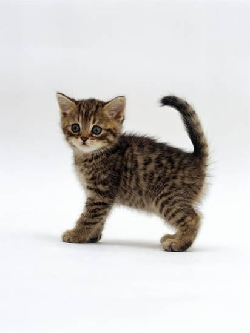
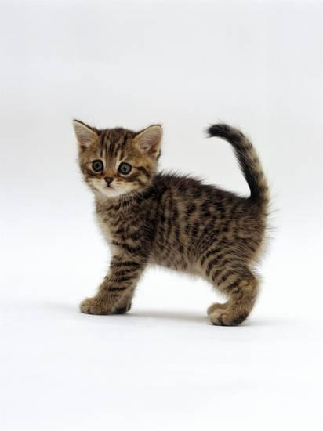
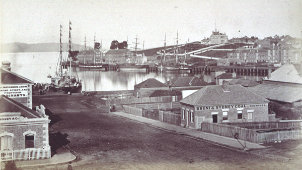
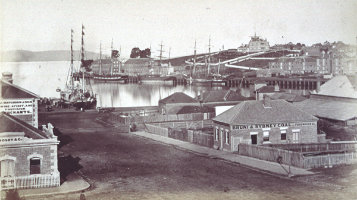

Lottee's Webpage

My creative computing work!
Lottee's Webpage
My creative computing work!
This website is where I will be displaying my work throughout the year. I am in Grade 10 at Taroona High School. I am the president of the Grade 10 Council. My mum was born in Devonport, my dad was born in Christchurch, New Zealand, my sister and I were born in Hobart. I love food, travel, fun and family. My favourite places to escape are, New Zealand, the beach, and Lord of the Fries Resteraunt.
 

The 3Doodler is “The World’s first and best 3D pen” (3Doodler). This pen allows you to draw 3D objects at the touch of a button. You can literally draw in the air, its magic. The pen uses strands of solid plastic that can be refilled. There are different types of plastic strands including; ABS, PLA, Wood, FLEXY, Metal, Nylon, and Polycarbonate. I used PLA and ABS. ABS is the right consistency to draw 3D, it’s able to set in the air while you are drawing. PLA is less stiff and melts into itself when drawing 3D but hold its shape when drawing 2D objects. I have never actually used a 3D pen before this project, so it was quite an interesting experience to learn. To start off with, I was very dubious about the speed and temperature the plastic was coming out, and it look me a while before I stopped drawing squiggly string all over the table.
During this project, I wanted to be able to fully achieve in drawing an elephant. I needed a lot of practice of drawing flat objects until I was able to go up. I wanted to immerse myself in the 3Doodler community online, and was able to find a lot of information on YouTube. Becoming comfortable in using the pen without constantly looking at the instruction booklet was also something I wanted to achieve.
I put together a word document with a heap of pictures of objects I wanted to create. I watched some YouTube videos on how to use a 3D pen and what you can make with one. I drew out some pictures of things I could trace, to practice with. Then I began to work my way up to making the 3D elephant with grey PLA.
I started this negotiated project, doing 3D printing. I used Sculptures. I found it really hard to do anything detailed on the elephant. I knew of a pen that could print in 3D so I did some research and found the 3Doodler. We had it ordered in from Amazon. When I started to research 3Doodler pens, I found a community of enthusiastic people. Many were teachers in the art of 3Doodlers. There were hundreds of tutorials, on basics to the most advanced pieces out there. Many people were using the 3Doodler as an art tool, creating, sculptures, designer fashion pieces, and jewellery. In the end, I began to really enjoy creating random objects and sculptures. To be honest, I have no idea what I will do with them but, I thought they came out quite well, for a beginner.
After quite a few lessons and lots of useless squiggly string, I finally mastered the basic techniques and was able to create a few pieces. My first piece was the lime green Eiffel Tower. I used the paper template in the instruction guide book. I slowly traced the 2D shapes with the pen. Then when they were dry, I stuck them all together and made a tower. The second project I made was the 2D elephants. I started by drawing the elephant on glossy paper and then going over it with the pen. The problem was, when I peeled the dry elephant off, it ripped the paper and it stuck to the elephant. So, for the second 2D elephant, I just drew straight onto the table, and that worked really well. My third and final project, was my 3D elephant. I did circle motions with the pen and slowly brought up the pen while continuing circles. I created four legs. I then drew a flat oval on the table and started to bring that up in slow oval shapes. This was so it was hollow, and I didn’t use too much plastic. I turned the half oval upside down and did the same on the other side. I drew the elephant head 2D because I ran out of plastic. I stuck all of the pieces together and my 3D elephant was done.
 
